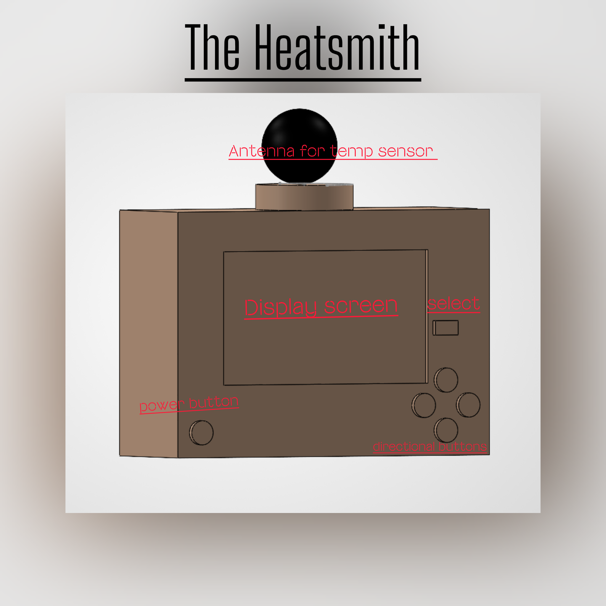
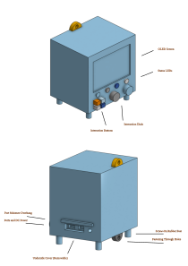

Overview of Design Ideation
This page focuses on exploring different features ideas, and sketches that could help meet the user needs of the HeatSmith. Each user need is paired with several possible features and short descriptions of how they could improve the product. These ideas will help the team compare different options and decide which features would work best in the final design.
Generating Ideas
To start the process of design ideation, every member was given the opportunity to generate multiple ideas to fulfil key user needs. This resulted in 100+ different features that could be used to satisfy these needs, as shown below:
| requirement / need | feature | detail |
|---|---|---|
| The product provides accurate temperature measurements that users can trust without secondary verification. | Temperature Sensor | The device uses a sensor to show temperature readings. |
| The product provides accurate temperature measurements that users can trust without secondary verification. | Backup Sensors | The device features a set of backup sensors working in tandem on a consensus model to deliver more accurate measurements |
| The product provides accurate temperature measurements that users can trust without secondary verification. | Measurement Estimation | The device uses sensors of different types alongside clock data to self-verify that measurements make sense. |
| The product provides accurate temperature measurements that users can trust without secondary verification. | Calibration | The device corrects sensor offsets to improve reading accuracy. |
| The product provides accurate temperature measurements that users can trust without secondary verification. | Digital Display | The device uses a practical method to show temperature. |
| The product provides accurate temperature measurements that users can trust without secondary verification. | Error Indicator | The device indicates when the readings are off and requires recallibration. |
| The product provides accurate temperature measurements that users can trust without secondary verification. | Data Averaging | The device provides stable and repeatable measurements. |
| The product provides accurate temperature measurements that users can trust without secondary verification. | Centralized Recalibration | The device automatically connects to external measurement sources for data verification |
| The product provides accurate temperature measurements that users can trust without secondary verification. | Multi-Paradigm Sensors | The device features multiple sensors that measure the same value through different means, such as having both an analog and digital temperature sensor. |
| The product provides accurate temperature measurements that users can trust without secondary verification. | Data Analysis | The device combines data from multiple sensors to make conclusions and provide active recommendations for the user. |
| The product has a durable build quality. | Rubber Bumpers | The device's edges help reduce damage from drops and impacts |
| The product has a durable build quality. | ASA Casing | The device uses a UV-Resistant and high-impact resistant material |
| The product has a durable build quality. | Rounded Construction | The device's frame is built without sharp corners. |
| The product has a durable build quality. | Honeycomb Interior | The device features an interior honeycomb to distribute forces around the entire frame. |
| The product has a durable build quality. | Steel Framing | The device uses a strong internal frame. |
| The product has a durable build quality. | Internal Cushioning | The fragile components of the device are cushioned against falls. |
| The product has a durable build quality. | Screen Shades | The screen is shielded from sunlight by built-in shades when not in use. |
| The product has a durable build quality. | Freely-suspended | The device's internals are held within a nested box suspended by springs or otherwise against falls. |
| The product has a durable build quality. | Resistive Touch Screen | The device uses a pressure-based touchscreen. |
| The product has a durable build quality. | Screen Cover | The device uses a protective cover to prevent the display's damage. |
| The product has a durable build quality. | Recessed Buttons | The device's buttons sit in the casing to prevent buttons from falling out on impact. |
| The product has a durable build quality. | Dial Control | The device is controlled with dials alternatively to a touchscreen. |
| The product remains accurate under different environmental conditions, including rain. | Hydrophobic Coating | The device uses a form of ceramic coating to have water bead off of itself. |
| The product remains accurate under different environmental conditions, including rain. | Sensor Cover | The device uses a cover that shields the sensors from getting wet. |
| The product remains accurate under different environmental conditions, including rain. | Ventilation Holes | The device features small holes to allow outside air to circulate. |
| The product remains accurate under different environmental conditions, including rain. | Waterproof Sensor | The device's temperature sensor is protected from direct rain contact. |
| The product remains accurate under different environmental conditions, including rain. | Drainage Holes | The device features holes that allows water to leave the area of the sensors. |
| The product requires little user intervention after its initial setup. | Sleep Mode | The device reduces power use when full operation isn't needed. |
| The product requires little user intervention after its initial setup. | Rechargeable Battery | The device can operate for long periods of time without changing out batteries. |
| The product requires little user intervention after its initial setup. | Memory Storage | The device can remember what the user setup for the device, every time it's used. |
| The product requires little user intervention after its initial setup. | Audio Alert | The device makes a "beep" when it's in a potentially hazardous environment. |
| The product requires little user intervention after its initial setup. | Phone Notifications | The device sends a notification via an app detailing its status and measurements. |
| The product requires little user intervention after its initial setup. | Auto Sensing | The user does not have to tell the device when to start sensing for new temperature readings. |
| Users can focus on the features relevant to their intended application without unnecessary complexity. | Preset Modes | The device can be programmed to detect weather a certain way with a push of a button. |
| Users can focus on the features relevant to their intended application without unnecessary complexity. | Menu System | The device has functions grouped into categories, letting users quickly find what they need. |
| Users can focus on the features relevant to their intended application without unnecessary complexity. | Dedicated Buttons | The device has specific buttons that give access to customization. |
| Users can focus on the features relevant to their intended application without unnecessary complexity. | Custom Settings | The device offers a variety of settings that tailor to the user's needs. |
| Users can focus on the features relevant to their intended application without unnecessary complexity. | Mode Editor | The user can select any mode, where they're allowed to enable and disable certain features for it. |
| The product provides good overall value for its price. | Rechargeable Battery | The device doesn't require extra money to buy batteries on the regular. |
| The product provides good overall value for its price. | Power Duty Cycle | The device saves power by limiting its consumption while not in active use, turning on only occasionally to log data. |
| The product provides good overall value for its price. | USB-C Charging | The device can be charged with a common USB-C cable. |
| The product provides good overall value for its price. | Modular Design | Parts can either be replaced or repaired, rather than having to buy an entirely new device. |
| The product provides good overall value for its price. | Prioritized Options | The device uses modes and options that are necessary without extra "fluff" to justify a higher price. |
| The product provides good overall value for its price. | Durable Casing | The device has longevity, while having the strength to function after critical drops. |
| The product has a sleek and easy-to-read interface. | Large Text | The device has a large display to read from far away |
| The product has a sleek and easy-to-read interface. | Secondary Display | The device has an HDMI or USB port for a secondary display |
| The product has a sleek and easy-to-read interface. | LCD Display | The device shows both temperature readings and alerts on a digital screen. |
| The product has a sleek and easy-to-read interface. | Icons/Symbols | The device has a variety of icons to show changes in both weather and device status. |
| The product has a sleek and easy-to-read interface. | Backlight | The device can be read in dark environments. |
| The product has a sleek and easy-to-read interface. | Color Display | The device uses various colors to indicate different temperature readings (blue for cold, red for hot, light blue for windy, etc.) |
| The product has a sleek and easy-to-read interface. | Accessibility Options | The device features preset options that accommodate for those with colorblindness or who need a high-contrast display. |
| The product has a sleek and easy-to-read interface. | Sans Serif Font | The device uses an easy-to-read font for those with visual impairments or reading disabilities. |
| The product has a sleek and easy-to-read interface. | 7-Segment LED Display | The device uses a durable and clearly visible display for key measurements. |
| The product shows whether temperature readings are rising, falling, or remaining steady over time. | Graphs | The device features a temperature graph for long-term monitoring of data |
| The product shows whether temperature readings are rising, falling, or remaining steady over time. | Trend Indicator | A simple up/down/flat indicator for the heat trend over a set period. |
| The display clearly communicates environmental measurements to the user. | Unit Control | The device allows for toggling between Fahrenheit/Celsius. |
| The product has sufficient physical stability during use. | Mounting holes | The device features through-holes and/or clips and/or a stand. |
| The product operates consistently when user safety depends on its measurements. | Watchdog Timer | The device automatically restarts its measurement processes if the software hangs or freezes. |
| The product operates consistently when user safety depends on its measurements. | Backup Capacitor | The device uses a capacitor to keep safety monitoring during power fluctuations. |
| The product provides a long useful service life. | UV-Stabilized Plastics | prevents the product outer shell from break due to exposure to UV light and breaking |
| The product provides a long useful service life. | Solid-State Components | The device avoids moving parts wherever possible to reduce physical wear and tear. |
| The product provides a long useful service life. | Overcharge Protection | The internal battery system prevents degradation by stopping the charge cycle once fully charged |
| The product provides a long useful service life. | Corrosion resistance | The internal circuit boards are coated with a protective layer to prevent corrosion over years of use. |
| The product provides a long useful service life. | RIGHT TO REPAIR | allowing easy access to the components and replacements, allowing for users to safely and easily repair it |
| The product resists breaking caused by moisture | water resistant casing | casing uses tubber and such to prevent dust and water getting in |
| The product resists breaking caused by moisture | Gold-Plated Contacts | to prevent corrosion of moisture |
| The product resists breaking caused by moisture | Silica gel packets | absorbs water, keeping components safe |
| The product resists breaking caused by moisture | moisture indicator | alerts the user to moisture too much for it to handle |
| The product resists breaking caused by moisture | water run off shield | protects the product by having a shield the protects it from water run off |
| The product resists breaking caused by moisture | Port Caps | The device features flexible port caps for any physical USB or other ports. |
| The product is easy to install. | Magnetic Base | for easy installation |
| The product is easy to install. | Pre-Applied Adhesive Tape | for easy installation |
| The product is easy to install. | Keyhole Slots | for easy installation |
| The product is easy to install. | Auto-Pairing Protocol | pairs to devices to read everything automatically |
| The product is easy to install. | plug in and play | the user only needs to turn on the device to get it to work |
| The product is easy to install. | Visual Setup Guide | The device features a visual guide for setup and common actions (think Lego-style) |
| The product requires little user intervention after its initial setup. | Solar Charger | solar panel keeps battery charged |
| The product requires little user intervention after its initial setup. | Auto-Dimming Display | dims the display to keep power usage low |
| The product requires little user intervention after its initial setup. | Automatic Time Sync | keep the time accurate so measurements are accurate |
| The product requires little user intervention after its initial setup. | Back up power source | secondary power source in case the first one fails |
| The product requires little user intervention after its initial setup. | Self-Calibrating Routine | calibrates sensors automatically to keep accuracy |
| The product includes a backup power source. | Dual Battery | has 2 batteries as a back up power source |
| The product includes a backup power source. | Supercapacitor Backup | keeps it alive for a period of time between swaps in batteries repair |
| The product includes a backup power source. | AC Adapter with Failover | plugged into the wall and will swap over to internal battery when it fails |
| The product includes a backup power source. | USB Power Bank Port | allows for a power bank to be used in case all else fails |
| The product includes a backup power source. | Kinetic Generator | shaking allows for power to be generated as back up back up power |
| The product provides long battery life. | Low Power Microcontroller | to keep it as efficent as possible |
| The product provides long battery life. | E-Paper Screen | a screen that doesn't update unless power is sent to it, very power efficent |
| The product provides long battery life. | High-Capacity Lithium-Ion | to keep it running as long as possible |
| The product provides long battery life. | Battery Optimizer | optimizes the battery to be as efficient as possible |
| The product provides long battery life. | adaptive battery usage | adapts to the usage of the power so it uses it as efficiently as possible |
| The product records daily high and low temperature values for later reference. | Manual Reset Button | reset just in case memory gets full |
| The product records daily high and low temperature values for later reference. | Timestamped Records | time and date stamped for accurate recordinng |
| The product records daily high and low temperature values for later reference. | All-Time Record Memory | records everything until storage is full |
| The product supports multiple sensors through one main unit. | Split-Screen Display | allows for multiple units to connect together to show different things on each sceem |
| The product supports multiple sensors through one main unit. | Auto-Scroll Mode | scrolls through different metrics every so often |
| The product supports multiple sensors through one main unit. | Sensor Naming Feature | custumizationto name each unit |
| The product supports multiple sensors through one main unit. | Expandable Hub | allows multiple units, to allow for connectivity and share information |
| The product supports multiple sensors through one main unit. | notification to phone | allows for all information to be send to phones |
| The product allows users to customize features according to their preferences. | Modular Dashboard | allows for choosing metrics and data displays |
| The product allows users to customize features according to their preferences. | Toggleable Alerts | allows for alerts to be toggled to phone |
| The product allows users to customize features according to their preferences. | Selectable Units | allows for which units are active at what times |
| The product allows users to customize features according to their preferences. | Programmable Sleep Schedule | will sleep during the time set |
| The product allows users to customize features according to their preferences. | Interchangeable Faceplates | allows for customization of faceplates to let the user make it their own |
Sort, Rank, & Group
Once the brainstorming session concluded, multiple trends came across the 100+ user design needs, which required multiple groupings for these statements. While these groups similar to the initial user need statements that didn't involve a design idea to solve these problems, they still give the device a much more clear direction and how it will solve the problems users had with other products. The content below provides a sorting of these statements, along with the rank of importance for these groups:
1. Accuracy & Reliability
| Rank | Feature Idea | Feature Detail |
|---|---|---|
| 1 | Temperature Sensor | The device uses a sensor to show temperature readings. |
| 2 | Calibration | The device corrects sensor offsets to improve reading accuracy. |
| 3 | Data Averaging | The device provides stable and repeatable measurements. |
| 4 | Backup Sensors | The device features a set of backup sensors working in tandem on a consensus model to deliver more accurate measurements. |
| 5 | Error Indicator | The device indicates when readings are inaccurate and recalibration may be required. |
| 6 | Self-Calibrating Routine | The device automatically calibrates sensors to maintain accuracy. |
| 7 | Multi-Paradigm Sensors | The device uses multiple types of sensors to measure the same value through different methods. |
| 8 | Measurement Estimation | The device compares different sensor measurements and clock data to determine whether measurements make sense. |
| 9 | Watchdog Timer | The device automatically restarts measurement processes if the software hangs or freezes. |
| 10 | Centralized Recalibration | The device connects to external measurement sources for data verification. |
| 11 | Waterproof Sensor | The temperature sensor is protected from direct rain contact. |
| 12 | Sensor Cover | The device uses a cover that shields the sensors from getting wet. |
| 13 | Ventilation Holes | The device allows outside air to circulate around the sensing area. |
| 14 | Drainage Holes | The device allows collected water to leave the sensor area. |
| 15 | Hydrophobic Coating | The device uses a water-repelling coating that causes water to bead off its surface. |
| 16 | Backup Capacitor | The device temporarily maintains safety monitoring during power fluctuations. |
| 17 | Data Analysis | The device combines information from multiple sensors to make conclusions and provide recommendations. |
| 18 | Trend Indicator | The device provides a simple up, down, or steady indicator showing temperature trends. |
| 19 | Timestamped Records | Temperature measurements are stored with their corresponding time and date. |
| 20 | Graphs | The device displays temperature changes graphically for long-term monitoring. |
| 21 | All-Time Record Memory | The device records measurements until its available storage is full. |
| 22 | Manual Reset Button | The user can manually reset stored data when necessary. |
2. Durability & Protection
| Rank | Feature Idea | Feature Detail |
|---|---|---|
| 1 | ASA Casing | The device uses a UV-resistant and impact-resistant exterior material. |
| 2 | Water-Resistant Casing | The casing prevents water and dust from reaching internal components. |
| 3 | Internal Cushioning | Fragile internal components are cushioned against falls and impacts. |
| 4 | Rubber Bumpers | The edges of the device help reduce damage caused by drops and impacts. |
| 5 | Corrosion Resistance | Internal circuit boards use protective coatings to reduce corrosion over time. |
| 6 | Screen Cover | The device uses a protective cover to prevent damage to the display. |
| 7 | UV-Stabilized Plastics | Exterior materials resist degradation caused by long-term sunlight exposure. |
| 8 | Recessed Buttons | Buttons sit inside the casing to reduce the chance of damage during an impact. |
| 9 | Rounded Construction | The device avoids sharp corners that could become common impact points. |
| 10 | Honeycomb Interior | The internal structure distributes impact forces throughout the frame. |
| 11 | Port Caps | Flexible covers protect USB and other physical ports from water and debris. |
| 12 | Gold-Plated Contacts | Electrical contacts resist corrosion caused by moisture. |
| 13 | Steel Framing | The device uses a strong internal metal frame. |
| 14 | Solid-State Components | The device avoids moving parts wherever possible to reduce physical wear. |
| 15 | Overcharge Protection | The battery system stops charging when full to reduce long-term battery degradation. |
| 16 | Moisture Indicator | The device alerts the user when excessive moisture is detected. |
| 17 | Water Runoff Shield | A shield directs water away from vulnerable portions of the product. |
| 18 | Freely-Suspended Internals | Internal components are suspended to reduce forces transferred during a drop. |
| 19 | Silica Gel Packets | Moisture-absorbing material helps keep internal components dry. |
| 20 | Right to Repair | Internal components can be accessed and replaced instead of requiring complete product replacement. |
| 21 | Mounting Holes | The device includes through-holes, clips, or a stand to improve physical stability. |
| 22 | Screen Shades | Built-in shades protect the display from sunlight when necessary. |
| 23 | Resistive Touch Screen | The device uses a pressure-based touchscreen that can remain functional in different conditions. |
| 24 | Dial Control | Physical dials provide an alternative to touchscreen controls. |
3. Interface & Alerts
| Rank | Feature Idea | Feature Detail |
|---|---|---|
| 1 | LCD Display | The device displays temperature measurements and alerts on a digital screen. |
| 2 | Large Text | Important information is displayed using large characters that can be read from farther away. |
| 3 | Icons / Symbols | The interface uses recognizable symbols to communicate weather and device status. |
| 4 | Color Display | Different colors are used to quickly distinguish temperature and environmental conditions. |
| 5 | Accessibility Options | Preset display options support users who require colorblind or high-contrast modes. |
| 6 | Sans Serif Font | The interface uses a simple font that is easier to read for users with visual or reading difficulties. |
| 7 | Backlight | The display remains readable in dark or low-light environments. |
| 8 | Unit Control | Users can switch displayed measurements between Fahrenheit and Celsius. |
| 9 | Audio Alert | The device produces an audible warning when potentially hazardous conditions are detected. |
| 10 | 7-Segment LED Display | Key measurements can be presented using a simple and highly visible display. |
| 11 | Auto-Scroll Mode | The interface automatically cycles through different measurements or sensor information. |
| 12 | Split-Screen Display | Information from multiple sensors can be shown simultaneously on the display. |
| 13 | Secondary Display | An HDMI or USB connection allows information to be shown on an additional display. |
4. Controls, Customization & Connectivity
| Rank | Feature Idea | Feature Detail |
|---|---|---|
| 1 | Preset Modes | The device provides predefined operating modes that can be activated quickly. |
| 2 | Dedicated Buttons | Physical buttons give users direct access to important functions. |
| 3 | Menu System | Device functions are organized into categories that users can navigate. |
| 4 | Custom Settings | Users can change settings according to their individual needs. |
| 5 | Mode Editor | Users can enable or disable specific features within an operating mode. |
| 6 | Toggleable Alerts | Users can enable or disable selected alerts. |
| 7 | Modular Dashboard | Users can select which measurements and information appear on the main interface. |
| 8 | Selectable Units | Users can choose which connected units or sensors are active. |
| 9 | Expandable Hub | Multiple sensing units can connect to one main device and share information. |
| 10 | Sensor Naming Feature | Connected sensors can be given custom names for easier identification. |
| 11 | Phone Notifications | Device information and alerts can be sent to a user's phone. |
| 12 | Programmable Sleep Schedule | Users can select times when the device enters a reduced-power state. |
| 13 | Interchangeable Faceplates | Users can change the exterior faceplate to personalize the appearance of the device. |
5. Power & Automation
| Rank | Feature Idea | Feature Detail |
|---|---|---|
| 1 | Rechargeable Battery | The device operates for extended periods without requiring disposable battery replacements. |
| 2 | Low-Power Microcontroller | The device uses an efficient microcontroller to reduce overall power consumption. |
| 3 | Auto Sensing | The device automatically begins collecting new temperature measurements without user input. |
| 4 | Memory Storage | User settings are retained between uses so they do not need to be entered repeatedly. |
| 5 | Sleep Mode | The device reduces power consumption when full operation is unnecessary. |
| 6 | High-Capacity Lithium-Ion Battery | The device uses a high-capacity rechargeable battery to extend operating time. |
| 7 | Backup Power Source | A secondary power source maintains operation if the primary source fails. |
| 8 | Dual Battery | Two batteries provide redundancy if one battery loses power. |
| 9 | Supercapacitor Backup | A supercapacitor temporarily powers the device during battery swaps or power interruptions. |
| 10 | AC Adapter with Failover | The device normally operates from wall power and switches to an internal battery during an outage. |
| 11 | Battery Optimizer | The system manages battery usage to improve efficiency. |
| 12 | Adaptive Battery Usage | Power consumption changes automatically depending on how the device is being used. |
| 13 | Power Duty Cycle | The device reduces power consumption by activating certain functions only when measurements need to be taken. |
| 14 | Auto-Dimming Display | Display brightness automatically decreases when full brightness is unnecessary. |
| 15 | Solar Charger | A solar panel can recharge the battery and reduce how often the user must manually charge the device. |
| 16 | Automatic Time Sync | The device automatically maintains accurate time information for measurements and records. |
| 17 | USB Power Bank Port | An external USB power bank can be used as an emergency power source. |
| 18 | E-Paper Screen | The display consumes very little power when information is not being updated. |
| 19 | Kinetic Generator | Physical motion can generate limited emergency power for the device. |
6. Installation & Value
| Rank | Feature Idea | Feature Detail |
|---|---|---|
| 1 | Plug-and-Play | The device begins functioning with little setup beyond powering it on. |
| 2 | USB-C Charging | The device uses a common charging connection rather than a specialized charger. |
| 3 | Modular Design | Individual components can be replaced or repaired instead of replacing the entire device. |
| 4 | Magnetic Base | The device can be installed quickly on compatible metal surfaces. |
| 5 | Visual Setup Guide | A visual instruction guide explains installation and common device functions. |
| 6 | Auto-Pairing Protocol | Compatible devices and sensors automatically connect during setup. |
| 7 | Durable Casing | A long-lasting enclosure reduces the likelihood that the entire product needs replacement. |
| 8 | Rechargeable Battery | Recharging the existing battery reduces the recurring cost of disposable batteries. |
| 9 | Prioritized Options | The product focuses on useful features rather than adding unnecessary functions that increase cost. |
| 10 | Keyhole Slots | Built-in mounting slots allow the product to be attached to a wall or other surface. |
| 11 | Pre-Applied Adhesive Tape | Adhesive allows installation without additional mounting hardware. |
| 12 | Power Duty Cycle | Reduced energy consumption lowers charging frequency and operating costs. |
Concept Sketches
This section contains three unique sketches that may be considered as the foundation of the product's direction and potential. Each of these sketches contain either a video or photo that dives into their concepts, along with a brief description of their purpose, functionality, and how they serve the user.
Sketch 1:


"The sketch in CAD is designed as a simple, handheld device that helps users quickly check environmental conditions and navigate settings without complication. Its main purpose is to measure surrounding temperature conditions, display them clearly, and allow the user to interact with the device through a button interface that's similar to a video game controller. This concept focuses on combining accurate sensing, ease of use, and a clean but familiarly nostalgic interface into one compact product."
Sketch 2:
"It is a 3d printed mock up of the overall shape and size of the unit. it shows the outer shell, and gives the user of how big the device is so they know where to put it."
Sketch 3:


"This sketch features the main unit and focuses on the peripherals (Screen, Status LEDs, Buttons, Dials), connection ports (DC Power, Sensors, Screens/Computer) and the mounting surfaces (Screw Fasteners, Rubber legs). The user experience primarily consists of selecting what information to display (Temperature, graphs, connections, etc) and what actions to perform using the buttons, while navigating lists using the dials. The purpose of the dials and buttons is to resist against outdoor conditions that a capacitive touchscreen may not be usable in. The fasteners give the user freedom in deciding where to place the HeatSmith."
Summary of Documentation & Discussion
For the brainstorming session, every member of the team (Joseph Rivera, Damio Garcia, & Malik Johnson) were involved with this process and met remotely through Discord, due strict availability. During this time, every member of the team brought in a minimum of 35 unique feature ideas for everyone to discuss and categorize. Before beginning the grouping process, each member gave a quick “label” to what their need meant to them. Whether the label was under “numbers”, “appearance”, or “buttons”, this would lead the group to start putting similar words or similar topics against each other. Once these small groups were created, every member came together to see if these small groups could be filed under a larger, broader category that defined each feature’s true purpose. This led to six different categories being created to filter and group each sub-section to their designated area.
In order to organize these ideas, Lucidspark was used to organize these groups and to create even broader groups that would ultimately decide the main focus of each need. Inside of Lucidspark, the cloud-based software’s AI was utilized to help clean up ideas that were either repeated, or ideas that didn’t have a clear sense of direction. The AI was also there to generate ideas that weren’t initially brought in, which created a very productive brainstorming session for the team. The notes and brainstorming documentation was taken by Assignment Leader & Meeting Leader, Joseph Rivera.
The list of requirements for this product were drawn from the previous project assignments, “User Needs & Benchmarking”, and “Product Requirements”. These two project assignments were the basis for figuring out what the most important requirements were going to be for this product, and have been used to create sketched concepts that fulfil these needs.